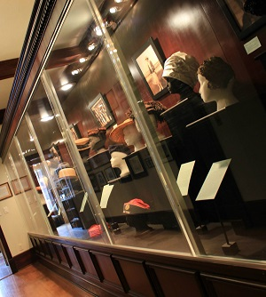
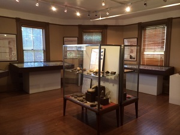
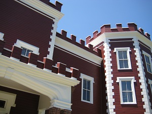

Current Exhibits
A Bridge to Bayside

On view in the main gallery is A Bridge to Bayside, A Corridor through Community: Construction of the Throgs Neck Bridge and Clearview Expressway.; This exhibition examines two Robert Moses inter-related projects that had a profound impact on Bayside and the surrounding communities. The bridge, and more so, the expressway, physically and emotionally redefined how we think about sense of place: our home, our neighborhood, our interactions with others, and how we go from “here” to “there” on a daily basis.
If the Hat Fits
Until the latter half of the 20th Century, hats were an essential piece of fashion for both men and women. They have been used to define social status, occupation, group membership, and have also been worn to, of course, express individuality or conformity to society's standards and expectations. Nineteen hats from BHS's archival collection are currently on display. They provide an overview of prevalent styles from the 19th and early 20th centuries.
Native Bayside
Native Bayside chronicles the prehistory of Bayside and the Northeast through artifacts recovered from an archaeological site in Queens and a model of the site excavation. The culmination of 35 years of work by archaeologist Edward J. Platt and the New York Institute of Anthropology, the Bayside site is the oldest carbon-14 dated continually inhabited site in coastal New York State.
The Castle
The exhibit explores the origins of the Castle from its design and use as the U.S. Army Corps of Engineers Officers’ Club in the mid-19th century to its reinterpretation as a cultural venue by BHS beginning in the 1980s.